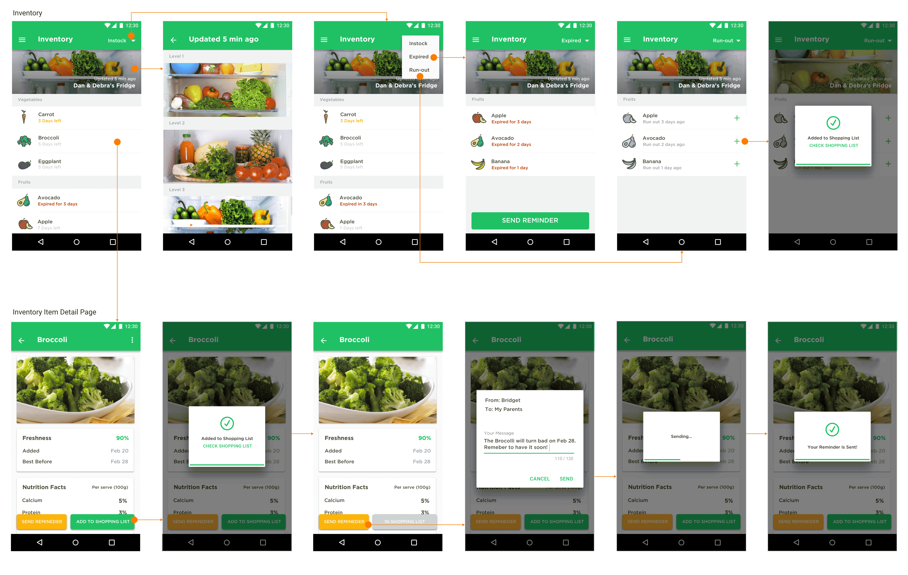

Overview
Living away from our elderly parents and grandparents, we all have these worries for them-
"Are they eating healthy?"
"What do they need?"
"What can we do for them?"
These concerns lead us to think about the general elderly population and their special needs when it comes to managing their food, a very important factor towards living healthy lives.
Needs Analysis
Based on our preliminary user study with the team members' parents and grandparents, we identified the elders’ special needs.
1. Due to a loss in memory, they tend to forget the date they buy in certain food, and fail to finish eating certain food in time;
2. They are in great need of a balanced and nutritious diet, but lack related knowledge;
3. They have to do grocery shopping for themselves in most cases, which is physically demanding;
4. They have limited ability to take advantage of technology, which make it even harder for them to solve the previous three problems by themselves;
Meanwhile, their care providers are looking for better ways to meet the needs of their elderly family members. Living separately from their children, the elderly need the care from their children far more than any kind of technology solutions; however, children are often hindered by the high communication cost to provide effective care. We want to help both sides through a new design.
Design Process
We came up with three important features that our system should have in order to meet our target user's needs (on the right).
To monitor inventory, we want to explore the possibility of computer vision technology. We will then be able to update the realtime inventory status to a database, which can communicate with both the elderly and their care providers.
The interface on the elders' side should be easy to use and taken their special needs into consideration. Therefore, we want to utilize a combination of touch-based dashboard display and a smart speaker.
On the care providers' end, a mobile app would be the best solution as they can get the information they want on the go, especially when they are shopping.
The following storyboard further communicates our idea of the scenario:
Mobile UI Design
Below is a snippet of the Andorid app UI design that I was responisble for: the inventory page and the inventory item detail page.
Interactive prototype built with Origami Studio-
Speech Interface Design
The preliminiary user study focusing on speech-based interaction indicated that the elders want to use the speech interface to ask about the following questions:
- How long have this item been in my freezer? Is it still good to eat?
- Is the temperature of the refrigerator good?
- Based on what I have in the fridge, am I eating healthy enough? What else should I get to be healthy?
- Based on what I have in the fridge and the expiration date of the items, what recipe should I consider?
- Use Confirmation Selectively
- Avoid dialogs that create too many confirmations, but confirm actions of high consequence
- Enhance Discovery
- Include “full intent” examples
- Make Sure Users Know They are in the Right Place
- Using landmarks tells users that Alexa heard them correctly, orients them in the interaction, and helps to instill trust in your experience.
- Present Information in Consumable Pieces
- Use Re-Prompting to Provide Guidance